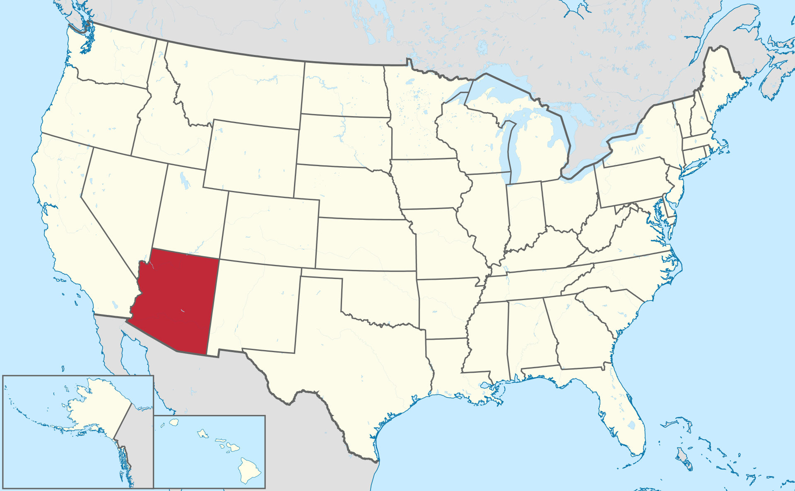
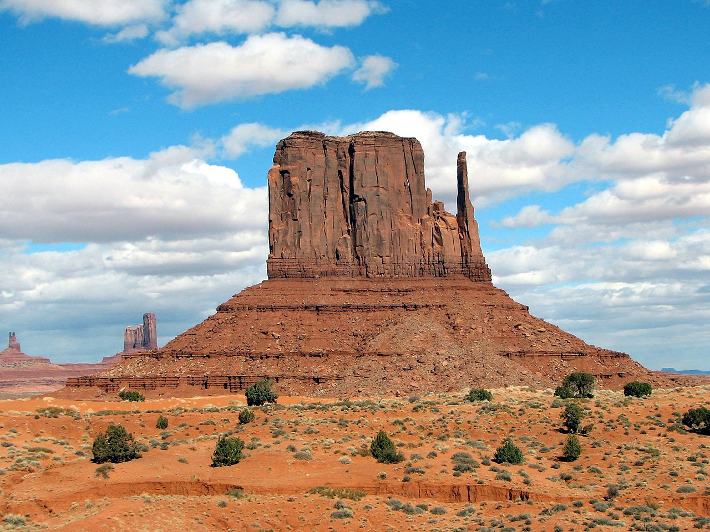

Йа - тег мейн
Географія
Аризона розташована на південному заході США. На заході межує з Каліфорнією
і Невадою,
на півночі —
з Ютою, на північному
сході
— з Колорадо ,
на сході — з Нью-Мексико,
на півдні — з Мексикою Площа території
штату становить 295 254 км² (6-те місце серед штатів країни).
Значна частина території штату припадає на гори, плато і пустелі. В Аризоні знаходиться найбільший
лісовий масив жовтої сосни. На півночі штату знаходиться Великий каньйон річки Колорадо.
Південно-західну частину Аризони займає пустеля Сонора (фото
за гіперпосиланням), в якій розташовані такі міста як Фінікс, Тусон (саме Тусон, а не
ТуКсон блд, і машина теж Тусон а не ТуКсон блжт) і
Юма. Незважаючи на те, що це одна з найбільш спекотних і посушливих пустель США, Сонора має досить
різноманітну флору і фауну, що пояснюється наявністю в році двох сезонів дощів. На північному заході
штату знаходиться пустеля Мохаве, яка відрізняється від Сонори більш висотним становищем. Кольорова
пустеля займає частину Колорадського плато на півночі Аризони. Невелика територія на південному сході
штату є частиною пустелі Чіуауа, яка в порівнянні з Сонора через висотного положення має більш м'які
літні температури.
Найбільші річки штату — Колорадо та її великий приплив, річка Гіла. Майже вся територія Аризони, за
винятком деяких південних і південно-східних районів знаходиться в басейні річки Колорадо.
На території штату розташовано три національних парки.
Цікаво, що з березня 2013 року по грудень 2014 року в пустельній місцевості Аризони виникла 3-км
тріщина, яка розвивається. Але все одно твоя мамка більша)0)00)0.
Історія
Протягом тисячоліть на території сучасної Аризони, так само як і на території інших штатів США, жили представники корінного населення Північної Америки — індіанці. В Аризоні жили стародавні народи пуебло (анасазі), індіанці хохокам, могольон та інші. Їх основним заняттям було землеробство, вони вирощували кукурудзу і боби. До появи європейців тут жили також апачі та навахо. Хоча перші європейці прийшли до Аризони ще в 1528 році, першим дослідником нових земель став францисканський монах Маркос де Ніза. Слідом за ним в 1540—1542 роках південний захід сучасних США (Аризона, Техас, Оклахома, Канзас) досліджувала експедиція під керівництвом іспанського конкістадора Франсиско де Коронадо. Наступні три століття землі Аризони входили до складу колонії Нова Іспанія. 14 лютого 1912 Аризона стала сорок восьмим штатом США, останнім з «континентальних» штатів. У 1919 році в Аризоні був створений Національний парк Гранд-Каньйон, один з найстаріших національних парків США. У 1926 році через Аризону було прокладено знамените шосе 66, відоме також як «Мати доріг» і «Головна вулиця Америки». У 1948 році індіанці в Аризоні отримали право голосу. У цьому ж році в штаті відкрилося перше високотехнологічне виробництво — свою фабрику тут побудувала компанія Motorola, один з найбільших на той момент виробників радіоприладів.
Долина монументів на кордоні Аризони та Юти
Населення
За даними Бюро перепису населення США на 1 липня 2011 року населення Аризони становить 6 482 505 осіб; в
порівнянні з показником перепису 2010 року приріст склав 1,42 %. Населення метрополії Фінікса зросла з
1991 по 2001 роки на 45,3 %, що зробило Аризону другим штатом з найвищим приростом населення протягом 90-х
років (перший був штат Невада). Сьогодні населення метрополії Фінікса перевищує 4,3 млн осіб. Близько 58
% населення Аризони проживають в містах з населенням понад 100 тис. осіб (найвищий показник серед усіх
штатів країни).
За даними на 2005—2007 роки 72,1 % населення штату говорить вдома тільки англійською; 21,7 % — іспанською.
Расовий склад населення:
- Білі - 8%
- Латиноамериканці - 30%
- Індіанці - 5%
- Афроамериканці - 4%
- Азійці - 3%
Я хз шо вставити у цей список тому просто запілю шоб було
- Йа пункт 1
- Йа пункт 2
- А йа - подпункт
- Йа пункт 3
- Йа пункт 4
- Йа пункт 5
Економіка
В економіці штату Аризона традиційно відіграють важливі ролі гірничодобувна промисловість, сільське господарство і туризм. В останні десятиліття швидко розвиваються високотехнологічні галузі, в тому числі аерокосмічна промисловість, виробництво комплектуючих для комп'ютерів та інші.
Основні сільськогосподарські культури Аризони — сорго, цитрусові, цвітна капуста, броколі, о курво бавовна! (був період, коли саме Аризона була найбільшим виробником бавовни в США) та інші.
Офіційна символіка
- Девіз штату: Бог збагачує
- Квітка штату: квітка кактуса Сагуаро
- Слоган штату: Штат Великого каньйону
- Камінь штату: бірюза